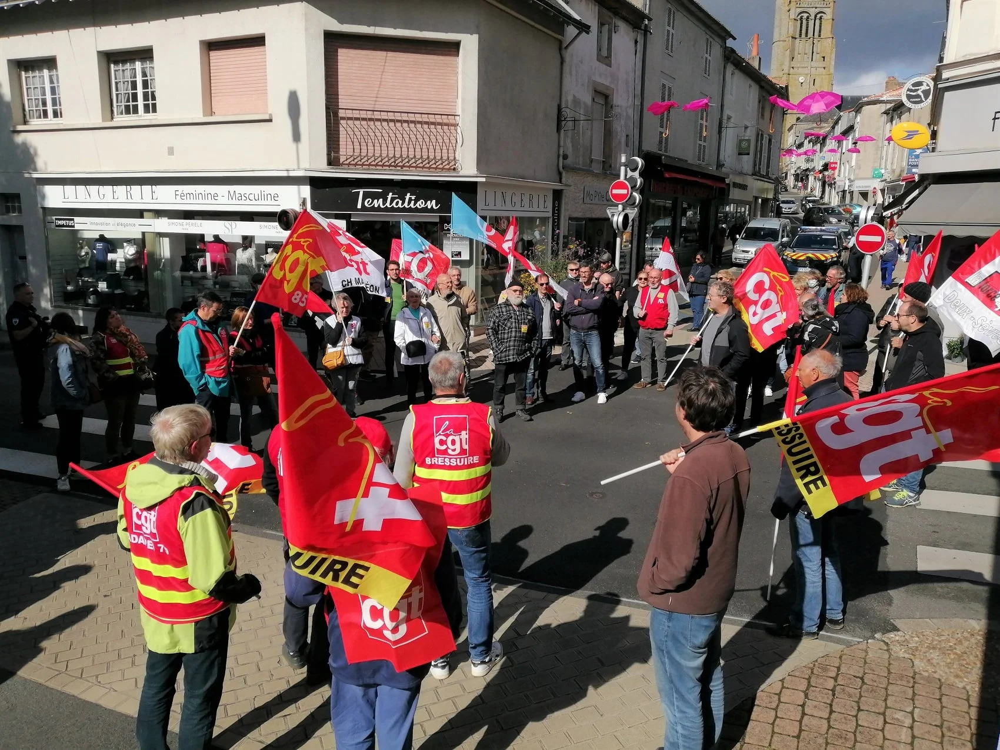
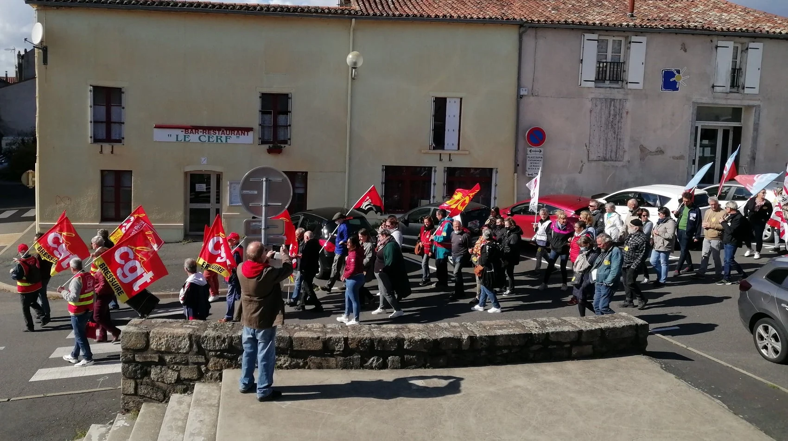
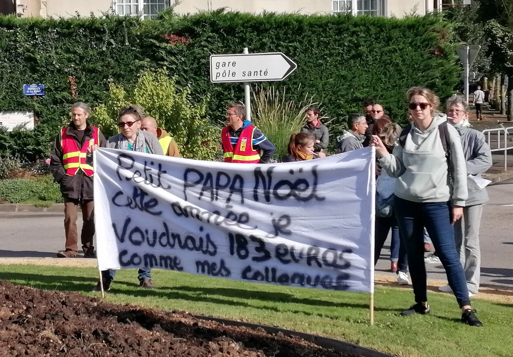
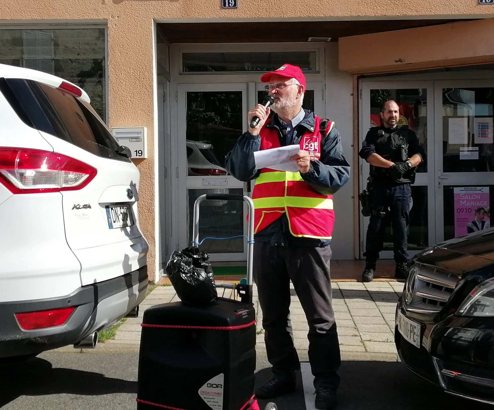
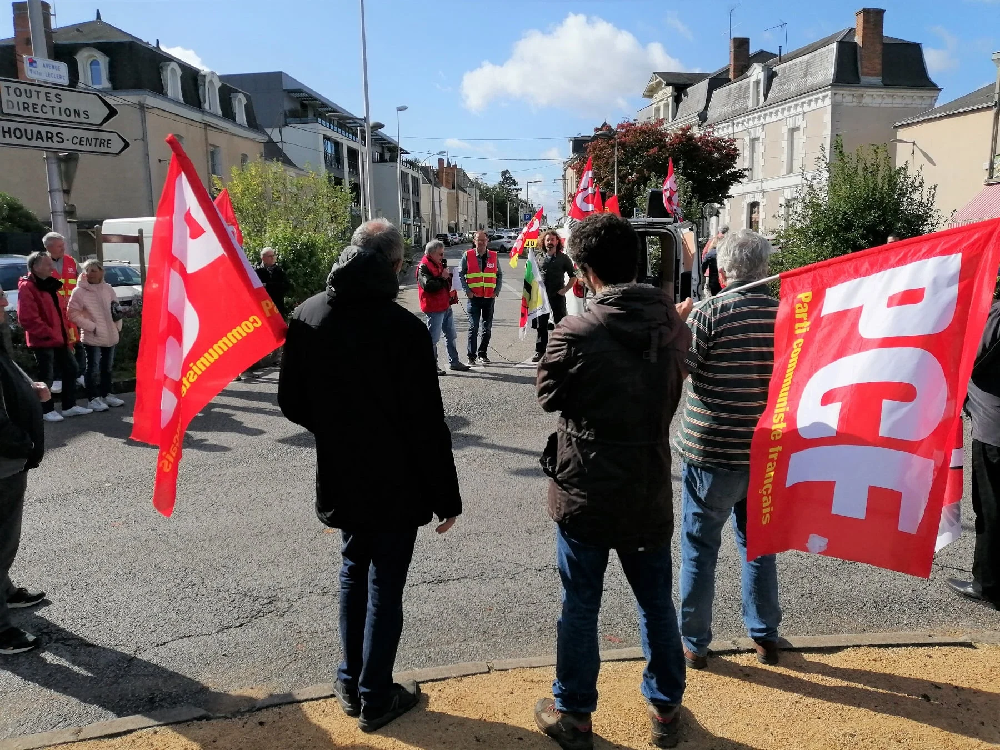
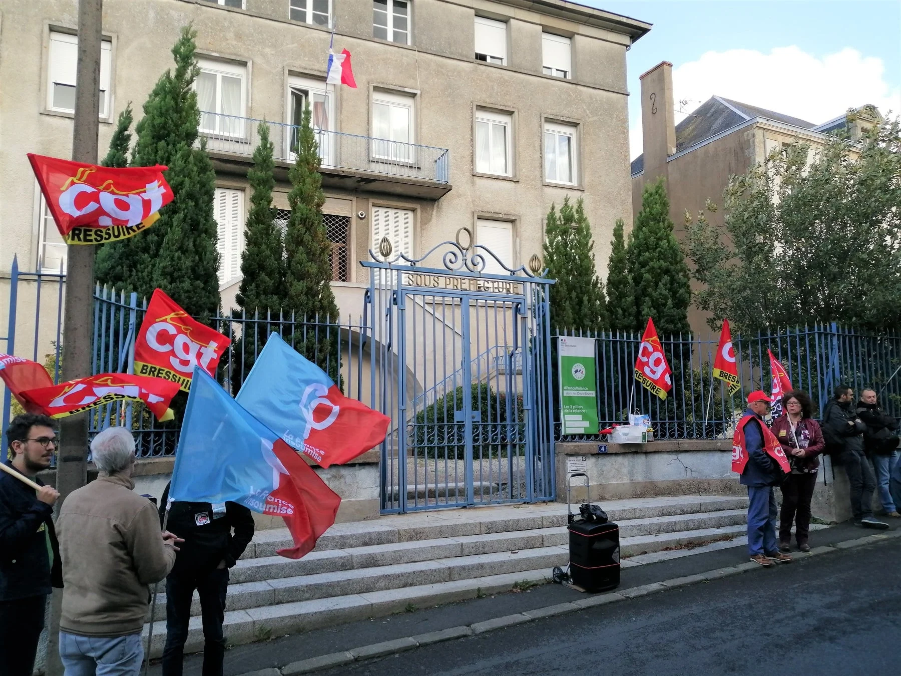

Reportage photo
5 octobre 2021. Bressuire et Thouars en manifestation
Date indiquée par Facebook · 6 octobre 2021
Repères éditoriaux
Les photos donnent à voir les mobilisations du 5 octobre à Bressuire et à Thouars. L’appel fédéral et le compte rendu de Niort complètent ce reportage.
Texte conservé avec la publication
Quelques photos de la manifestation du 5 octobre à Bressuire et Thouars






Sources
Archive rouge · export Facebook · AR-0002-FB-02017
À lire aussi · 5 octobre 2021. Notre appel à manifester dans les Deux-Sèvres